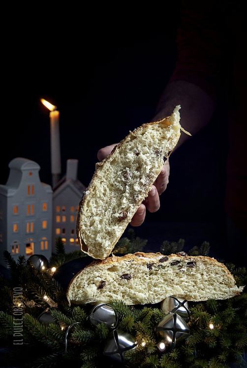

PAN NOCHEBUENO
Ingredientes:
- 500 gr. de harina de fuerza.
- 25 gr. levadura fresca.
- 250 gr. de agua.
- 125 gr. de aceite de oliva tostado y frio.
- 2 huevos.
- 20 gr. de sal.
- 1 cucharada de miel.
- Para el de frutos secos: Pasas, Nueces y Matalauva.
- Para el de chocolate pepitas de chocolate.
- 1 Huevos para pintar.
- Azúcar para espolvorear.
Preparación:
- El día de antes a preparar nuestro Nochebueno, tostaremos el aceite, poniéndolo en una sartén con la piel de un limón y dejando que esta se tueste. Una vez llegado este momento, retiramos del fuego y dejamos enfriar. (recordar tostar mas cantidad de la que se marca en la receta porque siempre se pierde un poco en el tostado)
- En 125 gr. de agua templada, disolvemos la lavadura y ponemos 100 gr. de harina. Tapamos con un paño limpio y dejamos que duplique s volumen. Esto nos llevará entre 30 minutos y una hora.
- Pasado este tiempo, vamos a preparar la masa de nuestro pan de la siguiente forma. Si tenemos un robot de cocina lo haremos con el gancho si no en un bol.
- Ponemos en el siguiente orden: la haría y la sal formando un volcán. El agua y en aceite tostado y frío, la masa del pre-fermento, la miel y los huevos.
- A velocidad baja haremos que se vayan incorporando todos los ingredientes hasta obtener una masa brillante y elástica. Si no tenemos robot lo haremos a manos primero en el bol con una cuchara de madera y luego sobre la encimera de la cocina amasando a mano.
- Una vez lista, la pondremos en el bol en forma de bola. Tapamos con papel film (o gorro de ducha) y la dejamos duplicar su volumen. Esto al igual que el pre-fermento dependerá de la temperatura de nuestra casa y pues estar entre una y dos horas.
- Una vez duplicada dividiremos nuestra masa en dos partes (si queremos hacer dos en lugar de uno grande) y pondremos los ingredientes que hayamos decidido.
- Yo he hecho uno con pasas, nueces y Matalauva (las cantidades un poco a ojo dependiendo de la cuantos trocitos nos queramos encontrar) y al otro pepitas de chocolate (de igual forma, la cantidad que consideremos suficiente).
- Amasamos para que se incorporen bien lo ingredientes sólidos y al final damos forma de bola, para que parezcan pequeñas hogazas, aunque también los podréis hacer con forma de barra, yo siempre los he adquirido redondos.
- Ponemos directamente en la bandeja de horno forrada con papel de hornear, dejando un espacio considerable entra cada uno para que crezcan bien.
- Tapamos con un paño de cocina limpio y lo dejamos en un lugar cálido hasta que vuelvan a duplicar su volumen.
- Precalentamos nuestro horno a 200º y una vez alcanzada la temperatura, pintamos nuestros pan con el huevo batido.
- Con una cuchilla o cuchillo muy afilado, vamos a darle un corte en forma de cruz a nuestro pan y espolvoreamos bien con azúcar por encima.
- Lo llevamos al horno hasta que se dore por completo, unos 30 minutos.
- Sacamos del horno y dejamos enfriar por completo.
